Il n'y a rien ici.
> Page introuvable.
> Une erreur s’est produite lors de la tentative d’accès.
> Le fichier demandé est absent ou a été déplacé.
> Cliquez sur “Retour à l’accueil” pour continuer...
Retour à l’accueil